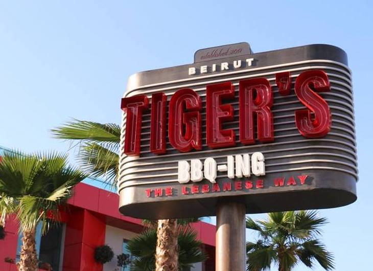

Junk food
- Tiger's Dinner 
- Address:
Hazmieh Rd, Beirut - Telephone number:
+9611287687 - Opening Times:
12:00 PM - 12:00 AM Daily - Review:4.5
- Junkies
- Address:
Hadi Nasralla Highway - Telephone number:
+9611555769 - Opening Times:
12:00 PM - 2:00AM - Review:4.1
- Munchease House
- Address:
Khaldeh highway heading south Chouaifet El Qoubbeh - Telephone number:
+9613021464 - Opening Times:
12:00 PM - 12:00 AM Daily - Review:4.5
- Sauce
- Address:
Antoun Gemayel, Beirut - Telephone number:
+9611744643 - Opening Times:
11:00 PM - 12:00 AM Daily - Review:4.2
- Tender Bar
- Address:
Kleaat Main Road Kesserwan - Telephone number:
+96170216023 - Opening Times:
12:00 PM - 12:00 AM Daily, closes on Sunday - Review:4.4
Tiger’s offers you an exciting experience the Lebanese way, from burgers to Lebanese specialties! This sports diner gives you a mix of everything from Lebanese shawarma to soujok to wings to burgers to pasta to grills to international salads and beyond. The grills are like the home-made grills “mama makes at home”. Also, the cool fact about this spot is that behind the high glass windows as you enter you will get to experience the vibe of a basketball field since the restaurant is owned by Fady el Khatib as mentioned before and his number is 15!

this hip junk food spot will satisfy so many of your cravings. With a menu loaded with appetizing starters, delectable burgers, sandwiches, and more, you'll quickly realize you need more than just one visit to this gem.
When it comes to Subs, Burgers and Hotdogs, we know very well how to deal with the presentation and mouthwatering taste to fulfill your unconcious desire for food!

Sauce is an american restaurant that serves a great burger with classic american taste in addition to a special variaties of Wings , Strips & Shakes.
Tender Bar is a resturant that offers American fast food. It is one of the most delicious restaurants in Lebanon and it offers a large variety of drinks and food.
Home Food
- Maman Restaurant
- Address:
Sidon - Telephone number:
+96107737144 - Opening Times:
09:00 AM - 09:00 PM Daily - Review:3.9
- Beitna Restaurant
- Address:
Tripoli - Telephone number:
+96106201414 - Opening Times:
08:00 AM - 11:00 PM Daily - Review:4.3
enjoy the home made food with a wide variety of amazing dishes that we all love!
Baytna is a patrimonial restaurant located in ‘Al Barouk’ village. It is situated in the vicinity of the Barouk River overlooking the Cedars Forest.This reataurant is brought to you by a homey atmosphere.
Healthy Food
- The Barn
- Address:
Gouraud, Beirut - Telephone number:
+9611449902 - Opening Times:
09:00 AM - 10:00 PM Daily - Review:4.5
- Organic Sisters
- Address:
VGXG+22F, Beirut - Telephone number:
+9611577907 - Opening Times:
08:00 AM - 03:00 PM , closes on Sunday. - Review:4.4
The Barn serves only the most beneficial of foods; organic, natural and healthy foods.
A catering kitchen delivering nutritious meals free of Hormones,antibiotic, gluten, diaries, and refined sugars and vegetable oils.